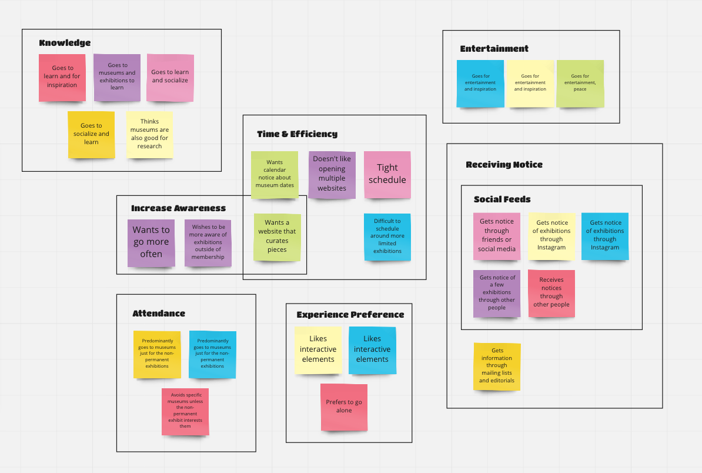
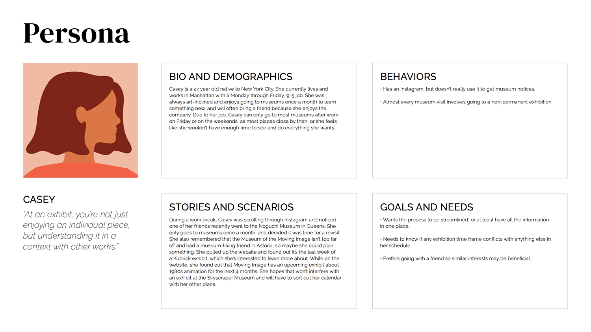
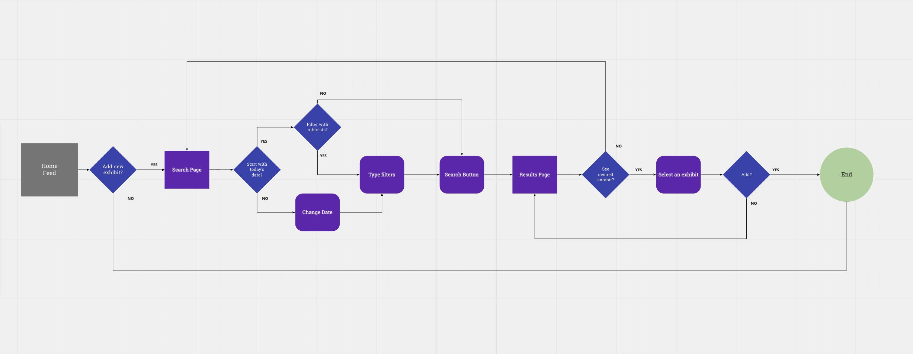
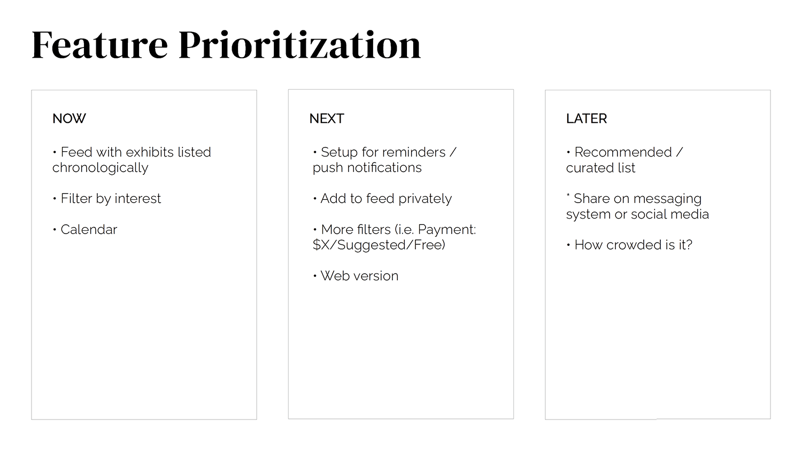

Calliope, a museum exhibition app
Museum goers of New York City need a calendar feed of exhibitions that interest them because they want to schedule more efficiently.
Research
Why do users go to museums? How much time did they spend at a museum, and why that amount of time? When it came to scheduled exhibitions — past, current, or upcoming — how did they find out about them?

Methods
- User Interviews: I conducted 7 interviews with New York City residents. A few of the research questions above were asked.
- Affinity Mapping: Organized observations and patterns.

Persona
I created Casey, who works a full-time job. Many of her museum visits were over the weekends due to time constraints.
Competitive Research
It was noted that none of the platforms had the ability to filter by interests very well.
Synthesis
User Flow

Feature Prioritization

Prototyping and Usability Testing
I deviated from my paper prototype when creating the low fidelity wireframes, as I realized that many of the users I interviewed had iPhones. I then focused on making the app more intuitive for the iOS environment.
And while I received positive comments on the design, a pain point was feedback on the search results page, which I revised in the prototype.
What's next?
- More usability testing for the recent prototype.
- Refine and redesign the search feature, i.e. an autofill function.
- Determine the features needed for the website version.
- More testing!